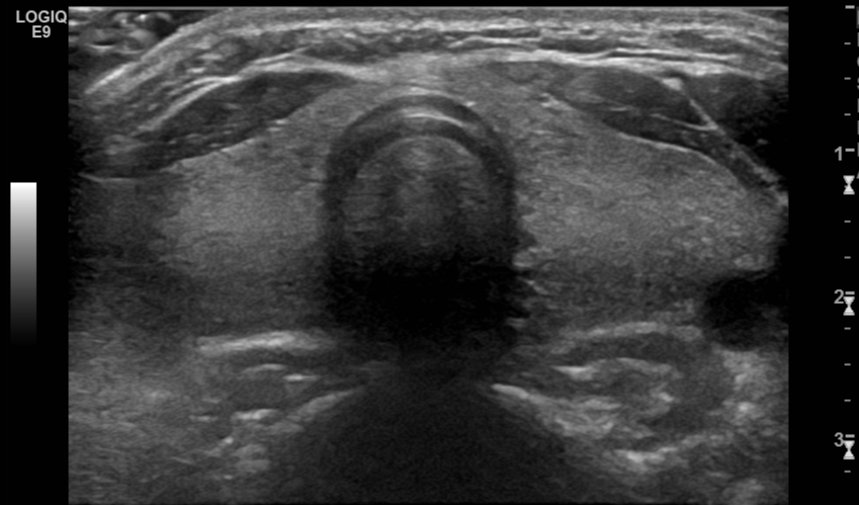

Normal thyroid (US)الغدة الدرقية الطبيعية بالسونارNormal · الصورة الطبيعية
الحالة: مقطع عرضي طبيعي للغدة الدرقية في مقدمة العنق.
النمط: Greyscale (B-mode) — السائل (البول، الصفراء، الدم) أسود عديم الصدى (anechoic)، والحصى والعظم والدهون بيضاء لامعة (echogenic).
ما يُرى فيها: فصّا الغدة على جانبي الرغامى (trachea) متجانسان وأفتح من عضلات العنق، ويصلهما البرزخ (isthmus) أمام الرغامى التي يملؤها الهواء فيظهر خلفها ظل أسود.
الوضعية: Transverse